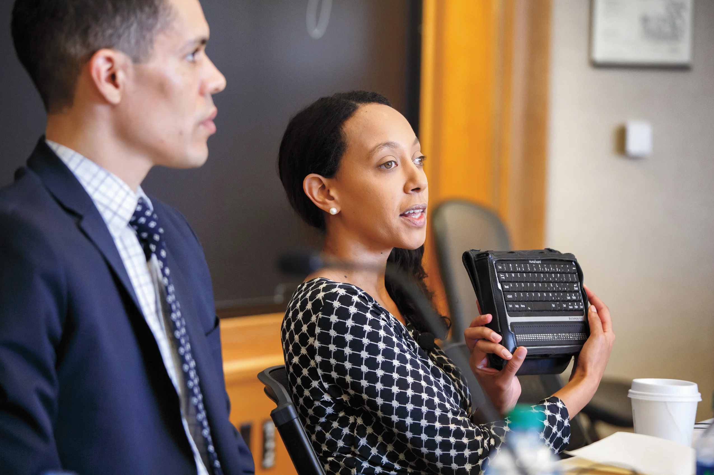
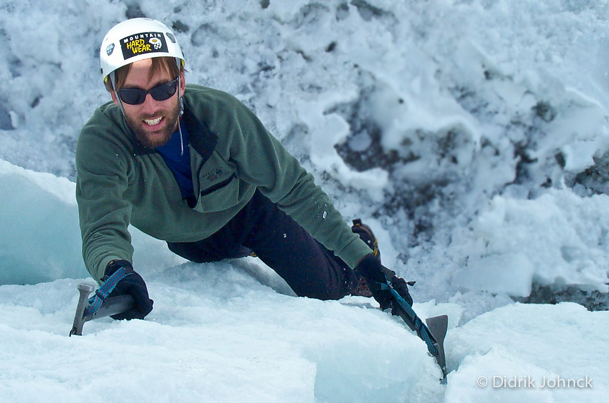

Celebrità dell'Accessibilità: Ispirare un Cambiamento Positivo
Celebriamo coloro che si sono distinti nel promuovere l'accessibilità e i diritti delle persone con disabilità, ispirando gli altri a seguire il loro esempio per creare un mondo più inclusivo. Dalle figure pubbliche agli attivisti locali, c'è una ricca varietà di persone che si dedicano a promuovere l'accessibilità e l'inclusione. Questi individui ci mostrano il potere del cambiamento positivo e ci incoraggiano a lavorare insieme per eliminare le barriere e creare un mondo più equo e accessibile per tutti. Riconosciamo e celebriamo il loro impegno e la loro leadership nel portare avanti la causa dell'accessibilità per tutti. Ogni azione, grande o piccola, contribuisce a promuovere un cambiamento positivo e a creare un futuro migliore per le generazioni a venire.
Celebrità
-
Stevie Wonder
Conosciuto in tutto il mondo per il suo straordinario talento musicale, Stevie Wonder è anche un fervente sostenitore dei diritti delle persone con disabilità. Ha lavorato attivamente per sensibilizzare sulle sfide affrontate dalle persone non vedenti e ha promosso l'accessibilità nei settori della musica e dell'intrattenimento.
-
Marla Runyan
Marla Runyan è una corritrice non vedente che ha gareggiato in numerose competizioni internazionali, inclusi i Giochi Paralimpici. Ha dimostrato al mondo che le persone non vedenti possono competere e avere successo in eventi sportivi di alto livello, ispirando altri con disabilità a perseguire i propri sogni.
-
Haben Girma
Haben Girma è un'avvocata e attivista non vedente che ha difeso i diritti delle persone con disabilità, in particolare per quanto riguarda l'accesso all'istruzione e all'informazione. È stata la prima studentessa non vedente a laurearsi alla Harvard Law School e ha continuato a lavorare per rendere il mondo un luogo più inclusivo per tutti.
-
Erik Weihenmayer
Erik Weihenmayer è un alpinista non vedente che ha scalato le vette più alte di tutti i continenti, incluso l'Everest. Il suo coraggio e la sua determinazione hanno dimostrato che le persone non vedenti possono superare sfide incredibili e raggiungere traguardi straordinari.